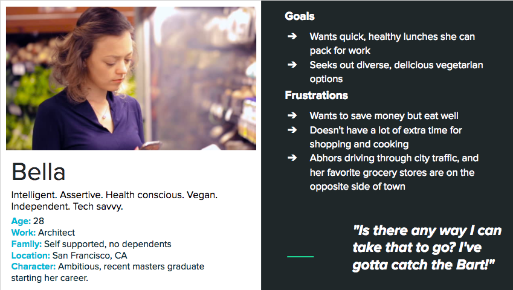
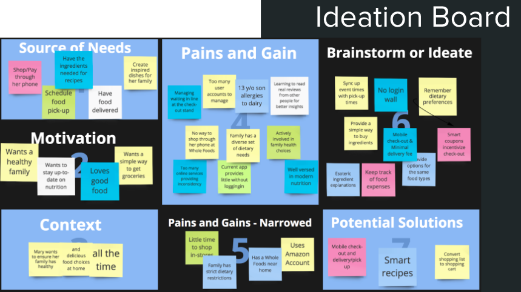
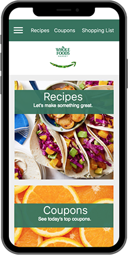

Whole Foods App
  Objective
In August 2017, Whole Foods was bought by Amazon, the world leader in online shopping. However, Whole Foods’ app did not reflect this ownership - it was slow, unintuitive, and limiting. After interviewing two Whole Foods shoppers and learning about their opinions, priorities, and goals, my partner and I focused on three functions in our app redesign: an easily accessible shopping list which could turn into an online cart, a list of coupons and special sales (filtered based on the user’s dietary needs), and a smart recipe recommendation system.
Process & Results
Once we created our first app prototype, we uploaded it on trymyui.com with instructions to explore. A frequent grocery shopper tried it and sent us her testing video. She loved our efficient recipe search, shopping list, and checkout procedures, but she didn’t like that she had to erase preloaded text in the search bar before typing, and she’d prefer to type in her ingredient quantity rather than use the scale bar we offered. Her feedback guided our priorities for the next iteration of design.
Role
The Whole Foods app redesign was one of my favorite experiences working with a partner. Because the UX 2 class was online, I never met my partner, Brian, in person. Despite this, we were in constant communication throughout the project, and we shared our responsibilities fairly. I sketched ideas for our 12 app pages, which he turned into a clickable prototype. We both interviewed one Whole Foods shopper; I created two of our three personas. I handled about 80% of the writing and documentation in our process book, and helped Brian conceive our user journey map. I researched Whole Foods’ competition, and made educated predictions about the app’s effect on WF market share.
Software
Adobe Illustrator, Proto.io, TryMyUI.com